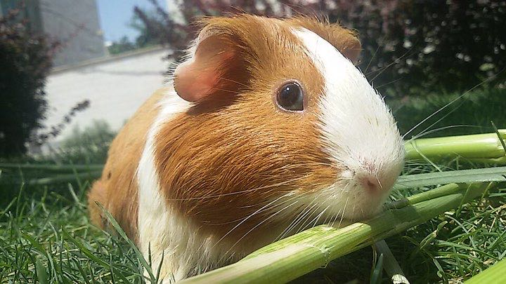

A pet is part of the family

Before your family gets a pet, sit down and talk together. Who will give it food? Who will clean its home? A pet needs you every single day, on rainy days and on holidays too.
Pets live a long time. A guinea pig often lives for 5 to 7 years, and many cats live for 15 years or more. That is a long and happy time together!
Small pets are gentle, but they get scared easily. Talk softly, move slowly and let them sniff your hand first.